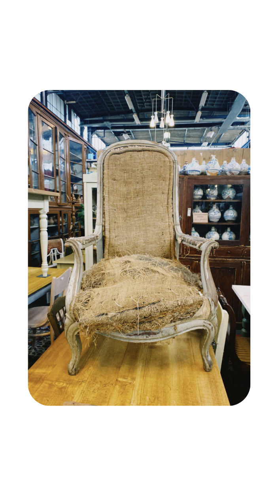
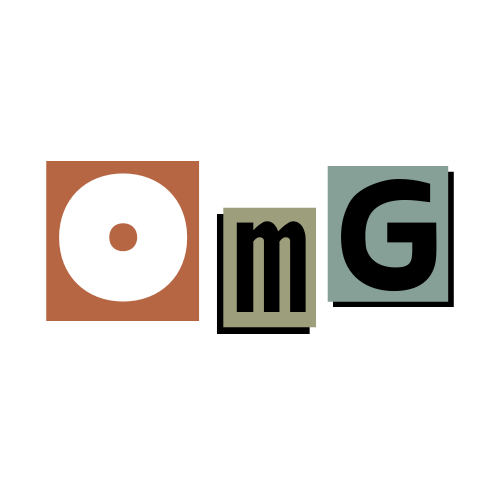
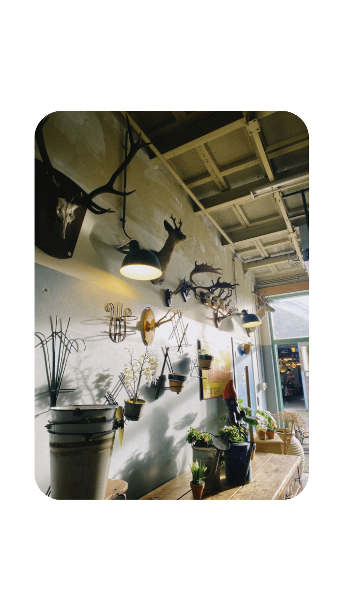

Oud maar goud is dé website waarbij je meer te weten komt over tweedehands meubels in Amsterdam. Wij geven een aantal tips met aanraders voor leuke vintage parels die leuk zijn om te weten als je van vintage shoppen houdt! Ook wordt er besproken dat het concept 'vintage meubels shoppen' duurzaam is en vertellen we wat meer over waarom veel mensen houden van vintage shoppen.
  